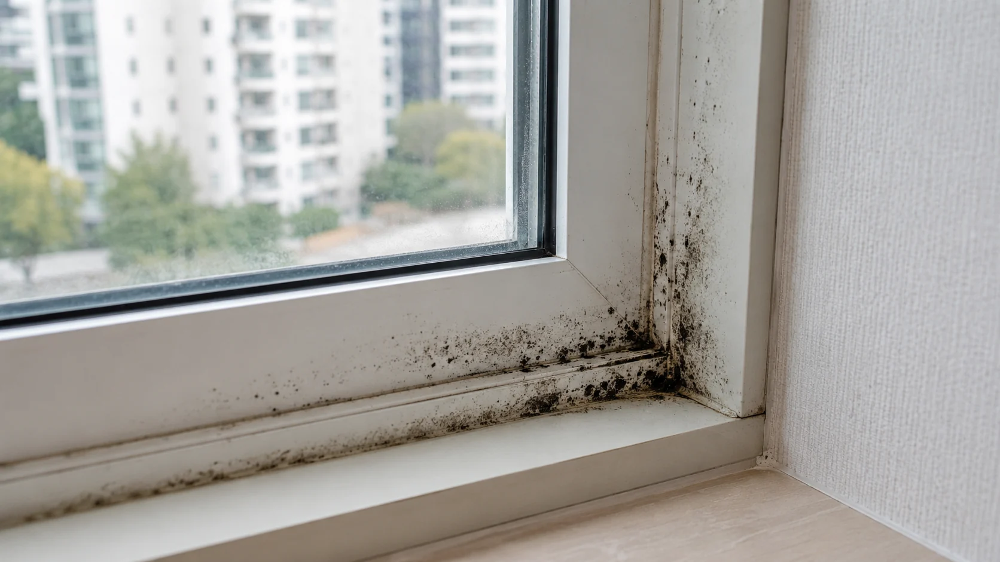
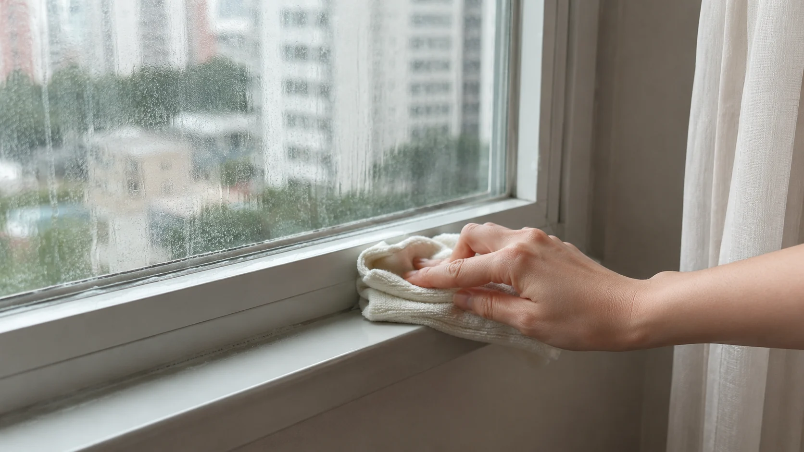
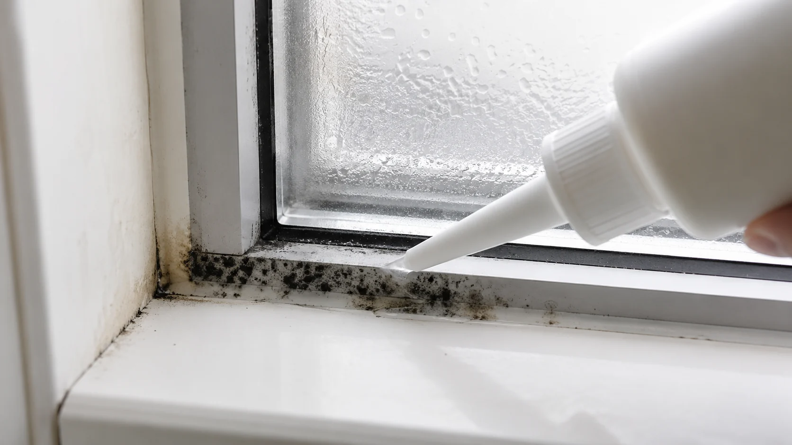
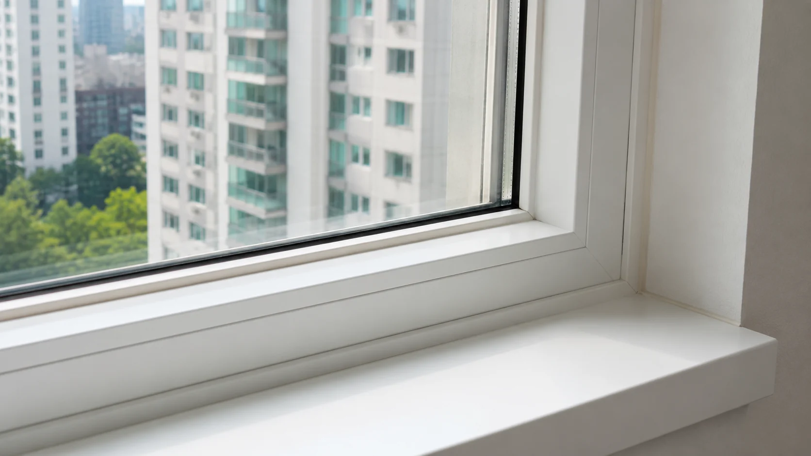

창틀 실리콘 곰팡이, 닦아도 다시 올라오는 이유가 따로 있었습니다
창틀 실리콘 곰팡이가 반복되는 이유와 환기, 습기 관리, 세척 순서를 생활 속 사례 중심으로 정리한 홈피드형 생활상식 글입니다.

검은 점을 보자마자 락스부터 찾는 분들, 여기서 의견이 갈립니다
며칠 전 커뮤니티에서 창틀 사진 하나가 올라왔는데 댓글 분위기가 꽤 뜨거웠습니다. 누군가는 락스를 듬뿍 묻혀 두면 끝이라고 했고, 누군가는 그렇게 하면 실리콘이 더 빨리 상한다고 말하더라구요.
저도 예전에는 창틀 실리콘 곰팡이를 보면 바로 강한 세제부터 생각했습니다. 그런데 몇 번 반복해서 닦아보니 이상하게 같은 자리에만 다시 올라왔어요.

그때부터 저는 이 문제가 단순히 더럽다는 문제가 아니라 습기, 결로, 먼지, 환기 습관이 같이 얽힌 문제라고 보게 됐습니다.
창문 곰팡이 제거를 검색하면 방법은 정말 많이 나오지만, 막상 우리 집 창틀에 그대로 적용하면 결과가 다를 때가 많습니다. 이 부분이 은근히 사람들끼리 의견이 갈리는 지점입니다.
제가 느낀 핵심은 이겁니다. 눈에 보이는 검은 점만 지우면 청소이고, 다시 올라오는 조건까지 줄이면 관리입니다.

닦았는데 또 생겼다면 청소 실력보다 집 안 습도가 문제일 수 있습니다
실리콘 곰팡이 원인은 생각보다 단순한 듯 복잡합니다. 창문 주변은 바깥 온도와 실내 온도가 만나는 자리라 결로가 생기기 쉽고, 그 물기가 먼지와 만나면 검은 곰팡이가 자리 잡기 좋은 환경이 됩니다.
저는 한동안 곰팡이 제거제를 바꿔가며 해결하려고 했습니다. 그런데 제품을 바꾸는 것보다 아침에 창문 물기를 닦고, 짧게라도 환기를 하는 쪽이 훨씬 오래 버티더라구요.
특히 베란다 곰팡이는 빨래 건조, 화분, 창문 틈새 바람막이, 커튼 위치까지 영향을 받습니다. 이걸 모르고 표면만 문지르면 며칠 뒤 다시 검은 점이 올라오면서 괜히 허탈해집니다.
여기서 반전은 물티슈로 자주 닦는 습관이 항상 좋은 것만은 아니라는 점입니다. 닦은 뒤 제대로 마르지 않으면 실리콘 틈에 물기가 남고, 그게 다시 곰팡이의 먹이가 될 수 있습니다.
그래서 저는 젖은 청소 후 마른 천 마무리를 꽤 중요하게 봅니다. 별것 아닌데 이 차이가 집안 습기 관리에서는 은근히 크게 느껴졌습니다.

완전히 없애야 한다는 말보다 재발 속도를 늦추는 쪽이 현실적입니다
솔직히 말하면 창틀 실리콘 곰팡이를 한 번에 영원히 없애겠다는 말은 조금 과장처럼 느껴집니다. 집 구조와 계절 조건이 그대로라면 언젠가는 다시 생길 수밖에 없거든요.
제가 추천하는 순서는 먼저 먼지를 제거하고, 곰팡이 부위를 적신 뒤, 전용 세정제를 짧은 시간 적용하고, 충분히 닦아낸 다음 완전히 말리는 방식입니다. 강한 세제를 오래 방치하는 방식은 실리콘 변색이나 손상 가능성도 생각해야 합니다.
그리고 아이나 반려동물이 있는 집이라면 냄새가 강한 제품을 쓸 때 환기 시간을 더 넉넉히 잡는 게 좋습니다. 저는 이런 부분을 대충 넘겼다가 머리가 아팠던 적이 있어서 지금은 꼭 창문을 열고 작업합니다.
댓글에서 늘 갈리는 부분도 여기입니다. 세게 한 번에 끝낼 것인지, 약하게 자주 관리할 것인지 말이죠. 저는 후자에 더 마음이 갑니다. 집은 실험실이 아니라 매일 사는 공간이니까요.
창문 곰팡이 제거의 진짜 기준은 오늘 깨끗해졌는지가 아니라 다음 장마, 다음 겨울에도 같은 속도로 번지지 않는지라고 생각합니다. 이 관점으로 보면 청소법보다 생활 습관이 더 크게 보이기 시작합니다.
창틀을 볼 때마다 검은 점만 보이면 짜증부터 나지만, 한 번 원인을 알고 나면 관리 방향이 꽤 선명해집니다. 여러분은 강한 세제로 한 번에 끝내는 쪽이 편하신가요, 아니면 조금 귀찮아도 습기부터 잡는 쪽이 낫다고 보시나요.